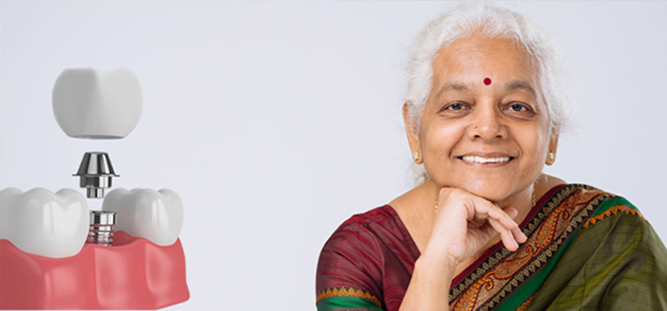
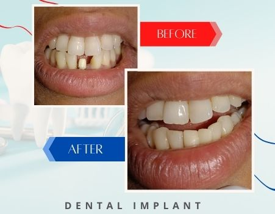

Implants need a certain volume of dense bone available in the jaw to be stably placed. In the past, this was often a problem for patients seeking full-arch tooth replacement with dental implants. Lengthy bone grafting procedures were often necessary to build up enough support for dental implant treatment to even be possible.
With the New Teeth in One Day procedure, four or more specially designed implants are placed in strategic positions that take advantage of specific areas of dense bone that exist in almost every patient.
After preliminary diagnostics and preparation, The Doctor performs the entire procedure in a single day. He takes care of any needed extractions, places all your implants, and provides you with a temporary and functional set of replacement teeth to wear while your implants heal. Your final new teeth will be fixed-in once healing is completed.

Implant-supported, fixed-in replacement teeth with New Teeth in One Day have the major advantage